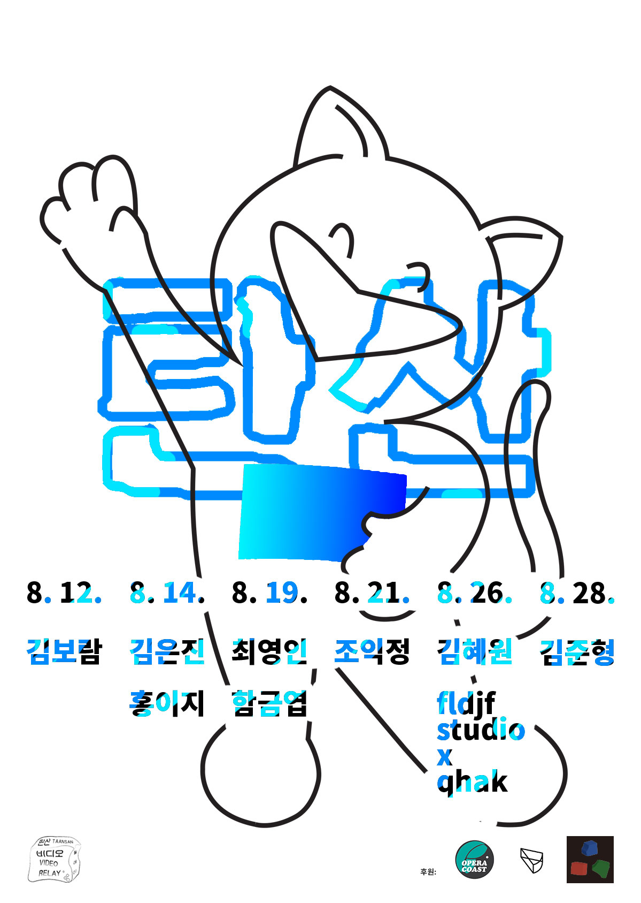

- 2015. 8. 26. 17:00
- 케이크 갤러리
This video features two songs. one is "Nobody Got It Like We Got It (Bonus)"
by CM THA SILENT PARTNER, used under BY NC SA/ shortened from original.
the other is "Fuck Off" by Steve Combs, used under BY/ also shortened from original.
- 김혜원 Hyewon Kim
- "내 소개를 해보려는 지금도 창 밖에서 일정한 간격으로 들리는 신호음에 집중한다.
배의 고동과 닮은 그 소리는 어떤 모양새로 어디서부터 들려오는 것인지,
나는 그 소리와 그 소리를 내는 누군가와 만날 수 있는 것인지,
같은 시간, 멀지 않은 그 현장으로 가는 방법을 누가 말했듯 청순하게 접근한다." - 상영 목록
- <여고생 A high school girl>, 6'30'', 2006
- 교복을 입음으로써 의심없이 '여고생'이 된 나와, 배부른 형태, 즉 임신으로 추측되는 상징적 형태의 충돌을 기록한 작업이다.
- <선풍기 두 대 Two Fans>, 4'19'', 2007
- 사물과 사물 사이에서 느껴지는 상태를 시각적으로 드러낸 결과물.
- <별 Star>, 3', 2009
- 별모양에 가까운 (불분명한) 그림자, 유리창 안 희미하게 보이는 아이들.
- <1분 44초 1minute 44seconds>, 2'48'', 2009
- 번지점프를 바라본다.
- <누구에게나 18번은 있다 A song of one’s own>, 16', 2010
- 누구에게나 있는 18번 곡은 노래를 부르기도 전에 들린다. 반면 너무나 익숙해 듣고 있어도 들리지 않거나 보고 있어도 눈에 띄지 않는 소리와 풍경을 한강이라는 장소에서 기록한 영상들의 배열이다.
- <집 Home>, 5'58'', 2015
- 그가 훔쳐 달아난 난은 그냥 풀이었다.
- <설거지 Dishwashing>, 6'30'', 2015
- 목적이나 결과를 배제한 체 설거지가 주는 감정에 온전히 집중한다.
- 20:00
- 케이크 갤러리
- fldjf studio x qhak
- 박보마는 2014년 부터 semi virtual studio & set 컨셉의 fldjf studio(리얼 스튜디오)를 운영하는 동시에,
qhak이라는 예명으로 자가 소속되어 활동하는 반사체이자 댄서이다.
‘스튜디오’는 회사의 언어, 시간, 하늘 등을 광고(재현) 한다.
스튜디오는 ‘빛’을 어떻게 기록할 것인지 고민하며 그것을 위해 세상의 형식들을 가상화 한다. - 상영 목록
- Opening
- -<fldjf studio decorations ad>, 15'3'', 2015
- 어떤 갤러리 전시장 내부 벽과 장식 선반1,2,3 을 통한 스튜디오 광고
- -<Our First Wedding Event>, 사진슬라이드, 2010
- Villa Aphrodite
- -The Villa 우리들의 거실
- -Room Our Kiss
- -Room 지중해
- -Room CA Sky
- Closing
- -<Star Light Cover-Minutes>(파랑, 하늘, 연두, 노랑, 주황, 빨강, 핑크 이상), 2'44'', 2015